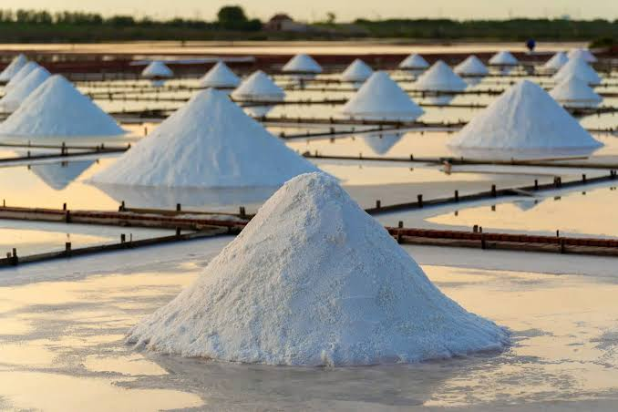
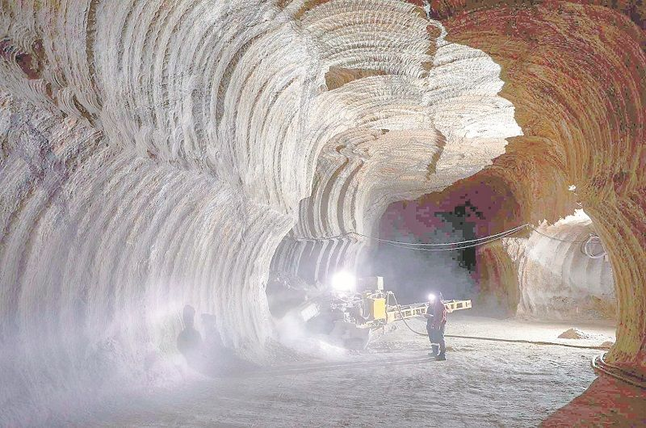
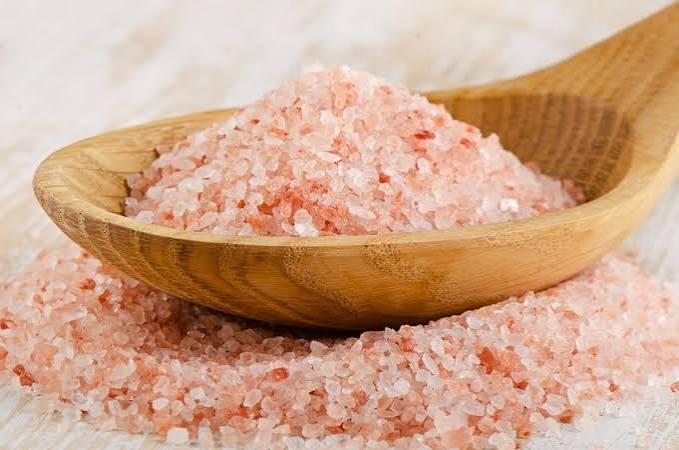

Descubra como diferentes tipos de sal são produzidos e extraídos ao redor do mundo.



Você já parou para pensar de onde vem aquele sal que usamos praticamente todo dia na cozinha? Parece algo simples, né? Mas a verdade é que existe muita ciência por trás de um pequeno grão de sal!
Dos oceanos às profundezas da Terra, o sal pode ser encontrado em diferentes lugares e obtido de maneiras surpreendentes. Alguns são produzidos com a ajuda do Sol e do vento, enquanto outros precisam ser retirados de grandes depósitos subterrâneos.
E sabe o que é mais interessante? Apesar das diferenças de origem, aparência e extração, esses sais têm algo muito importante em comum: a Química!
Neste espaço, você vai descobrir como são produzidos o sal marinho, o sal-gema e o sal rosa do Himalaia, além de conhecer os processos químicos e físicos envolvidos nessa jornada.
Prepare a curiosidade: vamos descobrir que até o sal tem muita história para contar!
O sal marinho é obtido a partir da água dos oceanos e mares. Sua produção acontece principalmente em regiões litorâneas com bastante incidência solar e ventos, condições que favorecem a evaporação da água.
A produção do sal marinho envolve dois processos físicos importantes: a evaporação e a cristalização. A água passa do estado líquido para o gasoso, enquanto o cloreto de sódio (NaCl), que estava dissolvido, pode formar cristais sólidos.
O sal-gema é encontrado em depósitos subterrâneos formados há milhões de anos. Esses depósitos surgiram quando antigos mares e lagos salgados evaporaram, deixando grandes quantidades de sais minerais que foram soterradas ao longo do tempo.
Existem duas formas principais de extração:
O sal-gema é composto principalmente por cloreto de sódio (NaCl). Na extração por dissolução, ocorre um processo chamado dissolução, no qual o sal passa da forma sólida para uma solução aquosa. Posteriormente, pode ocorrer a cristalização para recuperar o sal.
Apesar do nome, o sal rosa do Himalaia é extraído principalmente de depósitos minerais da região de Punjab, no Paquistão, especialmente da região da mina de Khewra. Sua formação está relacionada à evaporação de antigos mares.
Sua coloração está relacionada à presença de pequenas quantidades de outros minerais e impurezas, incluindo compostos de ferro. Esses componentes dão ao sal sua tonalidade rosada.
Assim como os outros tipos de sal apresentados, sua composição é predominantemente cloreto de sódio (NaCl). Entretanto, ele também apresenta pequenas quantidades de outros minerais, responsáveis por características como sua coloração.
Descubra algumas curiosidades sobre os diferentes tipos de sal!
Clique no botão para descobrir uma curiosidade!
Ambos são compostos principalmente por cloreto de sódio (NaCl), mas possuem origens e métodos de obtenção diferentes.
Sua coloração está relacionada à presença de pequenas quantidades de minerais e impurezas, incluindo compostos de ferro.
A água evapora pela ação do Sol e do vento. Com a concentração da solução, o sal pode formar cristais.
NaCl é a fórmula química do cloreto de sódio, principal componente do sal de cozinha.